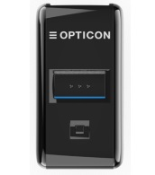
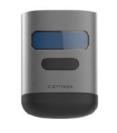

| Image |


The OPN-2500 and OPN-6000 run a combined Bootloader, OS, Softdevice and application, which can be loaded as a single file
by a small PC application called APPLOAD.
|
| Software codes |
The OPN terminals use an Operating System version that contains an unique 3 letter code.
Before you try to load new firmware on an OPN terminal you have to know which .bin file must be loaded on your terminal.
In the table below you can find the software codes for the OPN-2500 and OPN-6000.
| Terminal |
Bootloader |
OS |
Application |
| OPN-2500 |
FAN |
FBN |
FFN |
| OPN-6000 |
FAM |
FBM |
FFM |
|
| USB Driver |
To be able to communicate with the OPN terminals using USB, you will need to have its USB driver installed on your PC. This driver can be found on our web site on the 'Service and Support' page.
After downloading the USB Drivers installer run the downloaded executable and follow the instuction.
After installing the USB driver, you can connect your OPN-2500 or OPN-6000 to USB using the mini-USB cable. Windows will then automatically install a virtual COM port on your
PC, which can be selected in various applications, like Appload or PuTTy
|
| OPN-2500 |
To load a new OS or application onto the OPN-2500, you'll need a mini-USB cable (which is supplied with the OPN-2500) and follow the instructions below
(Alternatively you can use OptiConnect to restore the OPN-6000 to default firmware by Bluetooth)
| Load OS or application. |
USB Cable |
Connect the OPN-2500 to your PC or laptop using the mini-USB cable.
Start Appload and select the (Virtual) COM port of your OPN-2500 in Appload.
Select the firmware file in Appload.
|
Bluetooth (restore to default firmware) |
Halt the Operating System using the method described below.
Start OptiConfigure on any mobile device and select 'Pair Scanner'.
Select your OPN-2500 to connect.
Select 'Yes' to start the firmware update.
|
|
| OPN-6000 |
To load a new OS or application onto the OPN-6000, you'll need a mini-USB cable (which is supplied with the OPN-6000) and follow the instructions below
(Alternatively you can use OptiConnect to restore the OPN-6000 to default firmware by Bluetooth)
| Load OS or application. |
USB Cable |
Connect the OPN-6000 to your PC or laptop using the mini-USB cable.
Start Appload and select the (Virtual) COM port of your OPN-6000 in Appload.
Select the firmware file in Appload.
|
Bluetooth (restore to default firmware) |
Halt the Operating System using the method described below.
Start OptiConfigure on any mobile device and select 'Pair Scanner'.
Select your OPN-6000 to connect.
Select 'Yes' to start the firmware update.
|
|
| Trouble shooting |
Since the OPN doesn't have a display, it also doesn't have a system menu to resort to when you've installed a crashing application that prevents you from
loading new software on the OPN.
For this reason the OPN has a few escape mechanisms to allow you to restart, halt your application and/or install new software. This can be very useful in case the OPN has crashed or is constantly restarting due to
a crashing application.
| Restart mechanisms |
| Automatic |
The OPN has a watchdog timer to determine whether the OS is still running or has crashed. This watchdog will cause the OPN to restart after about 3 seconds if the OS has crashed.
This watchdog timer will not cause a restart when only the application has crashed.
|
| Manually |
The OPN has a manual restart mechanism that allows you to restart in situations that the OS is still running, but your the application has crashed. In order to activate
this mechanism, press and hold the trigger and delete key for at least 15 seconds. After the OPN shows a WHITE led, you can release both keys to complete the restart.
|
| Halting the Operating System (is case your application crashed or doesn't open the USB-VCP port) |
|---|
| Restart your application using one of the 2 methods listed above, but keep both keys pressed |
| Release the function key first and then the trigger key |
| (If successful the LED of your OPN should now be blinking red. You should now be able to load a new OS using the mini-USB cable or OptiConnect) |
| Restarting an OPN with an halted or missing OS or application |
|---|
|
If your OPN is blinking red, because the OS has been halted or is corrupt,
you can either load new software to exit this state or press and hold both keys for 5 seconds.
|
|